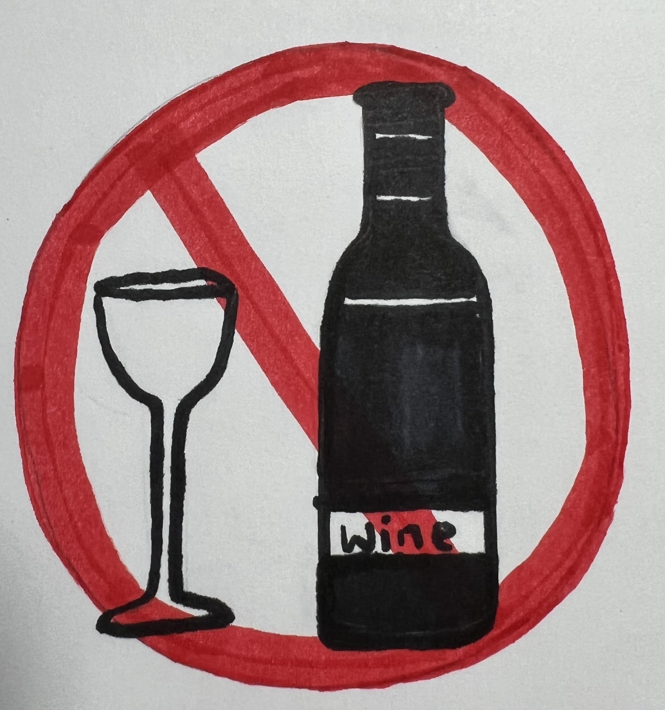
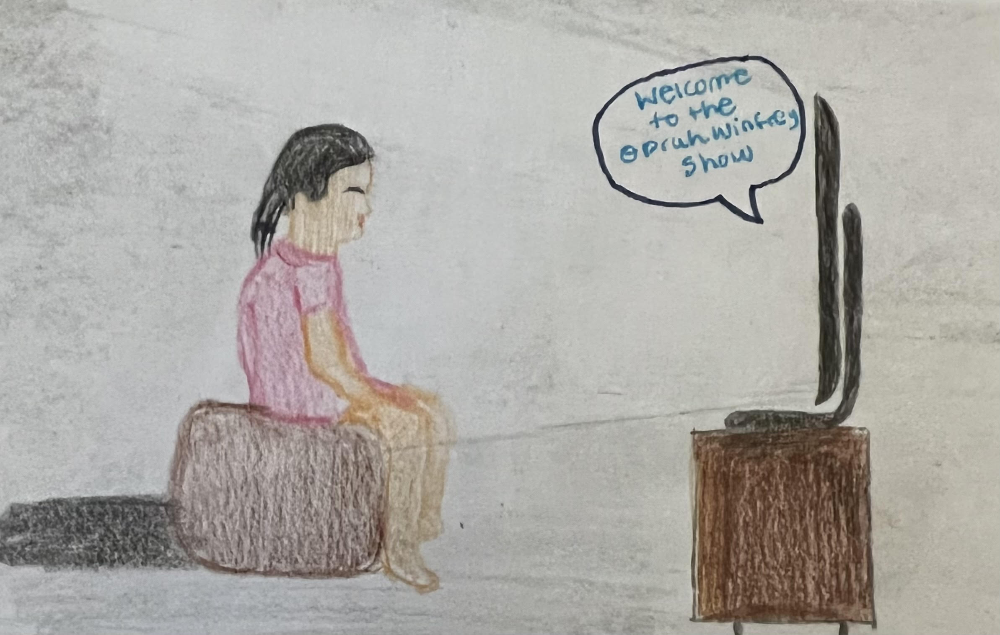

Oprah Winfrey has impacted many people's lives and inspired them to be better people. Her impact is remarkable and her fans share their personal stories to show how much their lives have changed because of "The Oprah Winfrey Show" and the empowering nature that she radiates. Additionally, to this day, she uses her platform and her wealth to help people have access to health programs and education programs for women and girls.
Cheryl Hallett of Wellington, Florida

In the year 2011, 51-year-old, Cheryl Hallett wrote a letter to the “Oprah Winfrey Show“ to participate in the makeover show and she got selected. At that moment, Cheryl thought in her head, “Maybe I do have a gift for writing, maybe there's something valuable and worthwhile about me,” she expressed to ABC News. At that time, she suffered from being an alcoholic and after going to the show, she realized the extent of her dependency on alcohol. For this reason, she participated in a recovery problem. Hallet says to ABC News, "I get to share my story and it's a real gift, one of the greatest gifts; and Oprah was the catalyst for the whole thing."
Frances Vidakovic

13-year-old, Frances Vidakovic discovered “The Oprah Winfrey Show” in 1988 and for the first time as remarked in a website called inspiringlifedreams, “I was blown away by the immediate connection I felt with this woman.” Frances said that in the show, the guests would reveal their experiences by sharing “unfiltered words” and Frances watched as their fear and vulnerability, transformed into strength, fearlessness, and courage. It was because of Oprah Winfrey that she was able to learn that despite scary things, there will always be hope. On the website, Frances concluded, “Oprah inspired in me a love for life, a passion and desire to do well.” Vidakovic is now a life coach and author of multiple books.
Tyler Perry
American actor, Terry Perry accredits Oprah Winfrey for giving him the inspiration for his career in the film industry. In a notable website, etoneline.com, Perry humbly says, “The exposure of it, seeing a person of color did this, that I can do it.” Terry Perry was motivated and inspired by all the accomplishments Oprah Winfrey made which gave him confidence that he could do it too. In addition, when watching an episode of Oprah Winfrey's talk show, Perry was inspired by a comment on the program that became an important life lesson for him: writing about difficult experiences will lead to personal breakthroughs. This encouraged him to continue his dreams and he moved from New Orleans to Atlanta in 1990 to finish his now-finished play titled, “I Know I've Been Changed.”
❮
❯